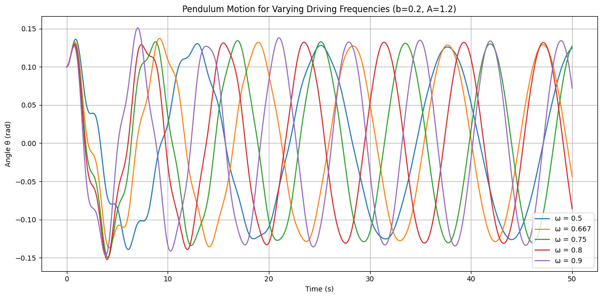

Problem 2
Task 1: Governing Equation and Small-Angle Approximation
Objective:
To derive the approximate solutions of the forced damped pendulum under the small-angle approximation and explore the resonance conditions and their implications on the system’s energy.
Governing Differential Equation
The motion of a forced damped pendulum is described by the following second-order nonlinear differential equation:
Where:
- \(\theta(t)\): angular displacement (in radians)
- \(b\): damping coefficient (viscous damping)
- \(g\): acceleration due to gravity
- \(L\): length of the pendulum
- \(A\): amplitude of external driving force
- \(\omega\): angular frequency of external driving force
Small-Angle Approximation
For small angles (\(|\theta| \ll 1\)), we can linearize the equation using:
This transforms the original nonlinear equation into a linear second-order nonhomogeneous ODE:
Let: - \(\omega_0^2 = \frac{g}{L}\) be the natural angular frequency of the pendulum.
Then the equation becomes:
General Solution Structure
This equation has a solution of the form:
Homogeneous Solution (Transient):
Solution to the undriven, damped system:
This has solutions depending on the damping regime: - Underdamped (\(b^2 < 4\omega_0^2\)): Oscillatory decay - Critically damped (\(b^2 = 4\omega_0^2\)): Fastest return without oscillation - Overdamped (\(b^2 > 4\omega_0^2\)): Slow return to equilibrium
Particular Solution (Steady-State):
We assume a particular solution of the form:
Where: - \(C\): amplitude of the steady-state oscillation - \(\delta\): phase lag
Substituting into the differential equation, we find:
Resonance and Energy Implications
Resonance Condition:
Resonance occurs when the denominator of \(C\) is minimized, i.e., when:
This is the resonant frequency of the forced damped oscillator — slightly lower than the natural frequency due to damping.
Amplitude at Resonance:
At resonance, amplitude is maximized:
Small damping \(b\) leads to very large amplitudes — a hallmark of resonance.
Energy Considerations:
The total energy of the pendulum is the sum of kinetic and potential energies. In the presence of damping and driving force: - The external force pumps energy into the system. - Damping dissipates energy as heat. - At steady state, the energy input from the driver balances dissipation, leading to a sustained oscillation.
Resonance implies maximum energy transfer from the driver to the pendulum.
Task 2: Analysis of Dynamics
Objective:
To investigate how the damping coefficient (\(b\)), driving amplitude (\(A\)), and driving frequency (\(\omega\)) influence the motion of a forced damped pendulum, and to examine the transition from regular to chaotic motion.
System Equation
We work with the full nonlinear second-order ODE:
Let:
- \(g = 9.8\)
- \(L = 1.0\)
- The state vector:
$$
\begin{cases}
\theta_1 = \theta \
\theta_2 = \frac{d\theta}{dt}
\end{cases}
$$
Then we convert it into a system of first-order ODEs:
Python Simulation (Runge-Kutta)
import numpy as np
import matplotlib.pyplot as plt
from scipy.integrate import solve_ivp
# Pendulum parameters
g = 9.8
L = 1.0
def forced_damped_pendulum(t, y, b, A, omega):
theta, omega_theta = y
dtheta_dt = omega_theta
domega_dt = -b * omega_theta - (g / L) * np.sin(theta) + A * np.cos(omega * t)
return [dtheta_dt, domega_dt]
def simulate_pendulum(b, A, omega, t_max=50, y0=[0.1, 0.0]):
t_span = (0, t_max)
t_eval = np.linspace(*t_span, 5000)
sol = solve_ivp(forced_damped_pendulum, t_span, y0, t_eval=t_eval, args=(b, A, omega))
return sol.t, sol.y[0]
def plot_pendulum(t, theta, label):
plt.plot(t, theta, label=label)
# Parameter sets to analyze
params = [
(0.2, 1.2, 0.5),
(0.2, 1.2, 0.667),
(0.2, 1.2, 0.75),
(0.2, 1.2, 0.8),
(0.2, 1.2, 0.9),
]
plt.figure(figsize=(12, 6))
for b, A, omega in params:
t, theta = simulate_pendulum(b, A, omega)
plot_pendulum(t, theta, f"ω = {omega}")
plt.title("Pendulum Motion for Varying Driving Frequencies (b=0.2, A=1.2)")
plt.xlabel("Time (s)")
plt.ylabel("Angle θ (rad)")
plt.legend()
plt.grid(True)
plt.tight_layout()
plt.show()
